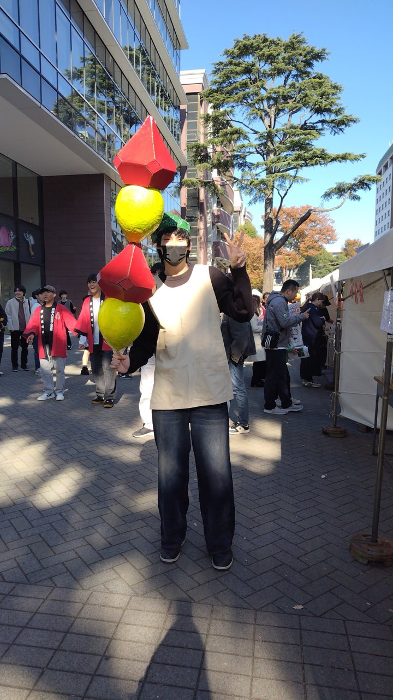
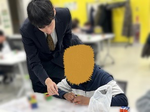

日本株シミュレーション
説明を読む
マルコフ連鎖モンテカルロ法（MCMC）による日経平均の予測と、その推定値を用いたCAPM理論に基づく個別株リターン予想。さらにFama-Frenchの3ファクターモデルを用いて、日本株が各因子をどれほど持っているかをプロットしました。
成蹊大学 経済学部 経済数理学科に入学。金融とAIについて学び、研究・個人開発に取り組む。
開発した将棋AI「芽生将棋」で出場し、一次予選を突破。
「芽生将棋」で2年連続の一次予選突破。
要件定義から設計・実装・公開までを自ら手がけて制作したWebアプリ。各デモはVercelで公開しています。
マルコフ連鎖モンテカルロ法（MCMC）による日経平均の予測と、その推定値を用いたCAPM理論に基づく個別株リターン予想。さらにFama-Frenchの3ファクターモデルを用いて、日本株が各因子をどれほど持っているかをプロットしました。



既存の818手順に加え、海外トップ層の2768フローティング手順群を日本で初めて採用・運用し、改善を重ねて実績化。


